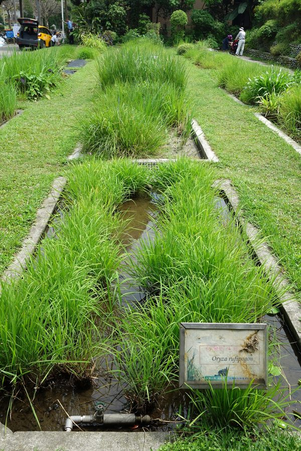

तिन्नीWild Rice
Oryza rufipogon · Poaceae · FLR-0287

- Scientific name वैज्ञानिक नाम
- Oryza rufipogon Griff.
- Family कुल
- Poaceae
- Hindi हिंदी
- तिन्नी
- Local names स्थानीय नाम
- tinni, tinni dhan, pasahi, wild rice
- Status here यहाँ की स्थिति
- native
- Movement आवागमन
- Resident, here all year
- Known from कहाँ दर्ज
- Others have published records from the Basti–Ayodhya districts बस्ती–अयोध्या के ज़िलों से दूसरों के प्रकाशित अभिलेख
- IUCN IUCN
- LC
- Review समीक्षा
- audited and independently read
When to look कब देखें
Expected mainly in July, August, September, October, November, December. मुख्यतः जुलाई, अगस्त, सितंबर, अक्टूबर, नवंबर, दिसंबर में अपेक्षित।
Uses and possibilities उपयोग और संभावनाएँ
“Traditional medicine” means a documented traditional use, not a claim that it works. Nothing on this page is medical advice.
Drawn from the documented uses in the profile below, where each is labelled traditional, current or a research lead. All uses →
तिन्नी / Wild Rice
Oryza rufipogon Griff. — Poaceae
तिन्नी — पानी वाली जगहों पर उगने वाली जंगली धान। इसके दाने भूरे या लाल रंग के होते हैं और कड़े होते हैं। यह प्राकृतिक दलदली घास है जो नदियों, तालाबों और भरे हुए खेतों के किनारों पर उगती है। पक्षियों और जानवरों का यह पसंदीदा भोजन है। इसके आनुवंशिक गुण खेती वाली धान में सुधार के लिए उपयोगी हैं।
Quick Identification त्वरित पहचान
| Feature | Description |
|---|---|
| Form | Perennial or annual grass, 60–150 cm tall, tufted or scattered, in water |
| Leaves | Linear, long, 20–40 cm, 6–10 mm wide, parallel-veined |
| Inflorescence | Open panicle, drooping, 15–25 cm |
| Spikelets | Arranged singly on short branches; with prominent awns |
| Grain | Reddish-brown or dark brown when ripe, longer and narrower than cultivated rice |
| Roots | Fibrous, adventitious, in mud |
Field tip: A tall grass in water and marshy areas with drooping seed heads and long awns. Grain is noticeably reddish or brown and has an awn, unlike cultivated rice. Grows in the wettest places in the district.
हिंदी — कैसे पहचानें: पानी में उगने वाली लंबी घास, बाली झूलती हुई। दाना लाल-भूरा, कड़ा, सियाल के साथ। खेती की धान से काफ़ी अलग।
Morphology आकारिकी
Biometrics (measurements for O. rufipogon in wetland habitats of eastern India):
| Measurement | Range |
|---|---|
| Plant height | 60–150 cm (variable by water depth) |
| Leaf length | 20–40 cm |
| Leaf width | 6–10 mm |
| Panicle length | 15–25 cm |
| Grain length | 7–10 mm |
Stems: Erect or ascending in water, hollow, jointed, with roots forming at lower nodes in mud.
Leaves: Long, linear, pointed, with prominent parallel veins. Margins are entire. The ligule is prominent.
Inflorescence: An open panicle with spreading, drooping branches. Spikelets are arranged singly or in pairs and mature unevenly over weeks.
Grain: A caryopsis (fruit-seed unit), reddish-brown or dark brown at maturity, with a persistent awn, 7–10 mm long, narrower than cultivated rice.
हिंदी: पानी में पत्ती लंबी, गहरे रंग की। बाली खुली, झूलती। दाना लाल-भूरा, लंबा, सियाल के साथ।
Behaviour & Ecology व्यवहार और पारिस्थितिकी
A perennial or short-lived annual wetland grass native to South and Southeast Asia, thriving in permanent or seasonal water bodies. Oryza rufipogon grows in marshes, swamps, river margins, and flooded grasslands where water depth ranges from shallow (10–20 cm) to deep (up to 1 m). It flowers during the monsoon and autumn months and ripens seed from September to December. The plant tolerates periodic flooding and is a pioneer colonizer of disturbed wetlands. Its reddish grain is tough and takes many weeks to mature, a trait that differs from cultivated rice and is thought to be primitive. The grain is a key food resource for waterfowl and wading birds, and the plant itself provides cover for aquatic fauna. O. rufipogon is the probable wild progenitor of cultivated rice (O. sativa) and is of interest to rice breeders seeking disease resistance and stress tolerance.
हिंदी: पानी में रहने वाली घास। मानसून में फूल, सर्दी में दाना पकता है। पक्षियों का भोजन। खेती की धान में सुधार के लिए महत्वपूर्ण।
Life Cycle / Phenology जीवन चक्र
| Month / Season | Event |
|---|---|
| July–August | Tillering and vegetative growth in monsoon water |
| August–September | Panicle emergence and flowering |
| September–October | Grain development and colour change; awns darken |
| October–December | Grain hardening and ripening; shattering of seeds |
| January–March | Dormancy; seeds remain in mud or float to new sites |
The species completes its life cycle in 4–5 months if flooded continuously. Drought or fluctuating water levels trigger dormancy.
हिंदी: जुलाई-अगस्त में वृद्धि, सितंबर में फूल, अक्टूबर-दिसंबर में दाना पकना।
Associated Species / Interactions संबंधित प्रजातियाँ
- Wetland companions: Grows alongside sedges (Cyperus, Scirpus), spike rushes (Eleocharis), and floating aquatic plants.
- Waterfowl food: Seed consumed by dabbling ducks, teals, and wading birds.
- Fish habitat: Plant provides cover for small fish and aquatic invertebrates.
- Genetic resource: The wild genome contains alleles for disease resistance and stress tolerance valuable to rice breeding programs.
Pests and Diseases कीट और रोग
- Fungal blights: Leaf blasts are rare in wild populations.
- Seed-eating insects: Sitophilus beetles are less common in wild rice because the seed coat is very hard.
- Bird damage: Ripening seed is extensively eaten by waterfowl and wading birds; this is natural predation, not economic damage.
- Water molds: Pythium and Phytophthora can cause seedling rot in stagnant water; moving water minimizes risk.
Agricultural / Human Relevance कृषि प्रासंगिकता
Traditional food use: The reddish, nutty-flavored grain is eaten as a boiled rice or ground into flour. It is tougher than cultivated rice and requires longer cooking. In rural areas of eastern UP, wild rice grain is collected from wetlands in the dry season when other foods are scarce.
Folk medicine: The grain is listed in traditional Ayurvedic texts as a tonic for weakness and as a supportive food during recovery from illness, though no specific medicinal property is documented.
Genetic resource: Oryza rufipogon is the probable wild progenitor of the Asian cultivated rice O. sativa and possesses alleles for disease resistance (especially to blast and brown spot), stress tolerance (drought, flood, salinity), and pest resistance that are valuable to modern rice breeding. International rice research institutes maintain collections of wild Oryza genotypes for breeding programs.
Wetland ecology: The plant stabilizes muddy substrates in marshes, slows water flow, and reduces erosion. Its presence indicates healthy, undisturbed wetlands.
हिंदी: तिन्नी का दाना खाया जाता है, पर कड़ा होता है। परंपरागत दवा में भी आता है। आधुनिक धान में सुधार के लिए बहुत महत्वपूर्ण है।
Expected Locally स्थानीय रूप से अपेक्षित
Not a field record. Written from published accounts for eastern Uttar Pradesh. No confirmed local sighting yet — if you have seen it, that is what the atlas needs.
अभी तक स्थानीय पुष्टि नहीं। यह विवरण प्रकाशित स्रोतों से है, किसी अवलोकन से नहीं।
Wild rice is to be expected in wetland habitats and marsh margins throughout Basti district, particularly in and around the Bakhira Bird Sanctuary and other permanent water bodies. GBIF holds published records from these districts. The species thrives in places where water level is stable or fluctuates seasonally. The plant is visible from July through December.
Distribution वितरण
Global range: Native to tropical Asia, from India and Nepal through Southeast Asia to southern China and Japan.
In India: Widespread in wetlands across peninsular India and the Indo-Gangetic plain.
In Uttar Pradesh: Found in swamps, marshes, and wetland margins throughout the state.
GBIF records from core districts.
Research Questions शोध प्रश्न
Anyone can investigate these | कोई भी इन प्रश्नों की जाँच कर सकता है
- Does the seed of wild rice germinate faster or slower than cultivated rice when planted in the same soil conditions? — Soak and plant both; count days to emergence.
- Which waterfowl species eat wild rice seed, and how much do they consume in a feeding bout? — Observe birds eating ripening grain; identify species; time feeding.
- Can wild rice grain be cooked with cultivated rice, and does the flavor improve the dish? / क्या तिन्नी और खेती की धान को मिलाकर खिचड़ी बना सकते हैं? — Cook a mixed meal; compare taste and cooking time.
- How does the water level in a wetland affect the height and seed yield of wild rice plants? — Compare plants at different depths.
- Are there geographic differences in the color of wild rice grain across eastern UP wetlands (dark brown vs. reddish)? — Collect grain from different wetlands; record color and compare.
Similar Species मिलती-जुलती प्रजातियाँ
| Species | How to tell apart | हिंदी | |
|---|---|---|---|
| Cultivated rice Oryza sativa | Shorter (100–120 cm), grain without awn, whitish or golden when ripe, much softer | खेती की धान — छोटा, दाना सफेद/सुनहरा, नरम, बिना सियाल | |
| [[barnyard_millet\ | Barnyard millet]] Echinochloa frumentacea | Bristly panicle, short awn-like structures, grain even smaller (2–3 mm) | साँवा — कठोर बाल, बहुत छोटा दाना |
| Red Rice (var. O. sativa f. rubribarbis) | Cultivated variety; shorter plant; grain softer; with awn but uniform ripening | लाल धान — खेती की किस्म, पकना एकसमान |
Field rule: A tall grass in standing water with drooping seed head and long-awned reddish-brown grain that ripens unevenly over many weeks. Leaves are narrow and long. Grows in wetlands year-round but flowers in monsoon–autumn.
Taxonomy & Classification वर्गीकरण
Original description. Described by John Forbes Royle in 1833 from specimens collected in India. The genus name Oryza is the classical Latin name for rice, from the Arabic aruzz. The specific epithet rufipogon is from Latin rufus (reddish) and Greek pogon (beard), referring to the reddish awns.
Subspecies. Monotypic — no subspecies are currently recognised. Sometimes considered a subspecies of O. sativa (as O. sativa ssp. rufipogon) by some botanists, but now treated as a distinct species.
Family and order placement. Poaceae, order Poales. Closely related to cultivated rice (O. sativa) and African rice (O. glaberrima).
Phylogenetic notes. Oryza rufipogon is the probable progenitor species of Asian cultivated rice. Molecular phylogenetic evidence places the wild species as an outgroup to the cultivated rice complex. Multiple domestication events may have produced the different cultivated rice groups.
IUCN status rationale. Least Concern (LC). Widespread in natural wetlands across Asia; populations are stable and abundant in many regions, though some local wetlands have been converted to agriculture.
Photo Gallery फोटो गैलरी
Photos needed आवश्यक फोटो
- [ ] Wild rice plants in their wetland habitat (जलाशय में पौधे)
- [ ] Flowering panicle showing awned spikelets (फूली बाली)
- [ ] Ripe grain with characteristic reddish color (पका दाना)
No photos yet — add field photos to media/species/wild_rice/ and run node scripts/sync_photos.js.
References संदर्भ
- Griff., W. (described in Royle, J.F. 1833). Illustrations of the Botany and other branches of the Natural History of the Himalayan Mountains. London.
- Hooker, J.D. (1889). Flora of British India, Vol. 7. L. Reeve & Co., London.
- Duthie, J.F. (1903). Flora of the Upper Gangetic Plain and of the Adjacent Siwalik and Sub-Himalayan Tracts, Vol. 2. Government Printing, Calcutta.
- Sharma, S.D. (2010). Morphological and molecular characterization of Oryza species. Indian Journal of Plant Physiology 15: 123–131.
- International Rice Research Institute (2020). Oryza rufipogon Germplasm Collection. IRRI, Los Baños, Philippines.
- GBIF Occurrence Data — Oryza rufipogon, India (2020–2026).
Source file: species/flora/grasses/wild_rice.md